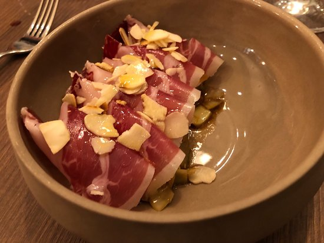
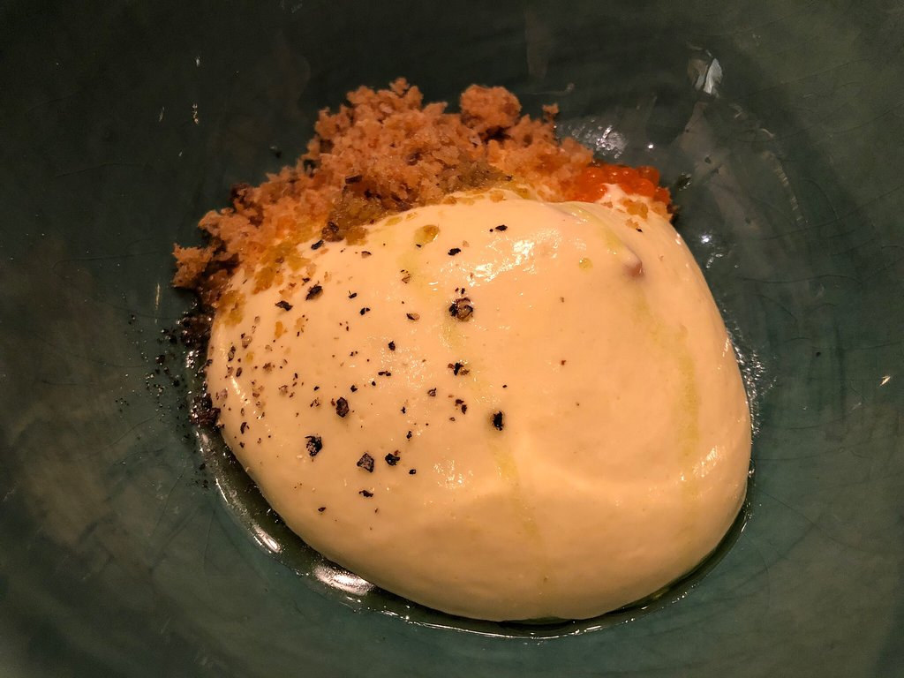
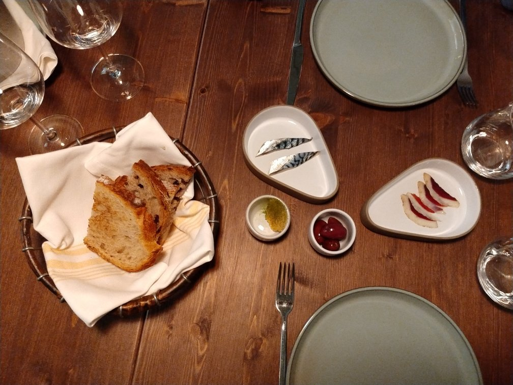
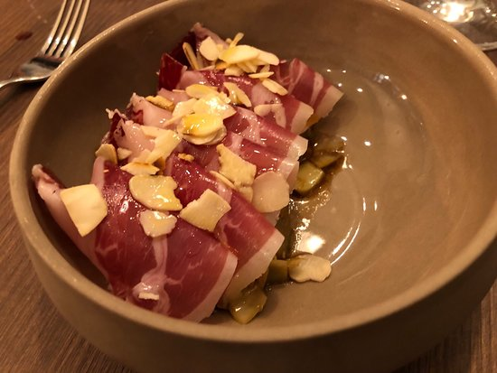
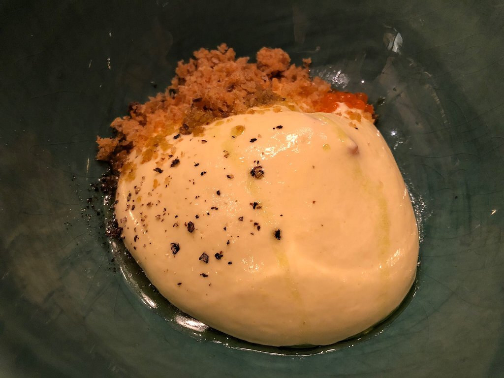
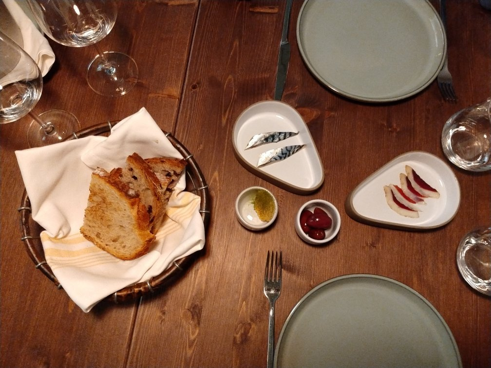

- Fisica o motriu
- Visual
- Auditiva
- Intel·lectual
- Psíquica
- Multisensorial
 





La tartarería
Zona: Centre, Eixample Esquerre.
Preu: Entre 30-45 Euros (Preu mitjà 32 €).
Telèfon de reserves: 931315859
Dinar: De fusió, De mercat, Mediterrània
Horari: Avui Dijous, Menjar: 13: 00h -16: 00h. Sopar: 19: 30h - 23: 00h. veure més horaris
Comentari: A la zona de l'Esquerra de l'Eixample de Barcelona trobem el restaurant La Tartarería, primer a la ciutat comtal especialitzat en tàrtars. El local és molt elegant i té un ambient acollidor i molt tranquil.
Plats: Ventresca de tonyina Bluefin i coca de vidre amb tomàquet. Tàrtar de peix blanc, coco i llima. Tàrtar de gamba vermella. Tàrtar de salmó curat, mola groc i poma Granny Smith. Tiradito de peix llimona amb vinagreta de gambes. Llom baix de vedella a la barbacoa amb celeritat i bimi.Cremós de xocolata, nata, avellanes i pasta de full cruixent.
Ambient: Exclusiu, Actual, Preferits, Estan de moda.
Característiques: Plats per celíacs, Obert diumenge, Taules rodones (6 max), Accés mobilitat reduïda.
UBICACIÓ
Metro: Urgell (L1), Universitat (L1-L2)
Ester Parra 17:51, Hoy
Un servei exquisit i un entorn acollidor i còmode. Tàrtars variats molt ben elaborats i amb una matèria prima excelent.
Richard Ruiz 20:25, 05/09/2020
Molt bon menjar i servei. Totalment recomenable. Sublims les profiteroles de cranc reial.